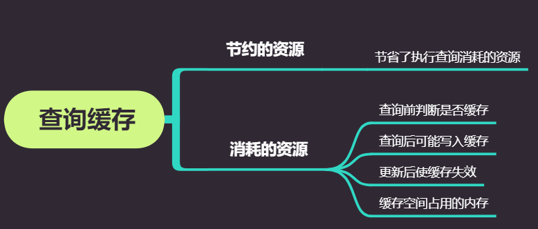

当查询命中缓存时，立即返回结果。跳过了解析 优化和执行阶段
什么时候不会被缓存
查询涉及的相关表数据发生变化时
查询缓存系统会跟踪查询中涉及的每个表，如果这些表发生变化，那么和这个表相关的所有的缓存数据都将失效。这种机制效率看起来比较低，因为数据表变化时很有可能对应的查询结果并没有变更，但是这种简单实现代价很小，而这点对于一个非常繁忙的系统来说非常重要。
查询语句任何细微变化时
MySql将查询结果存放在引用表中，通过一个哈希值引用，这个哈希值包含了如下因素，查询本身、要查询得数据库、客户端协议的版本等其他可能会影响返回结果的信息，
判断缓存是否命中时，MySql不会解析、参数化、任何规整查询sql的操作，直接使用客户端发来的原始sql语句。任何字符上的不同，如空格、注释都会导致缓存不被命中。
查询语句中有不确定数据时
- 包含
NOW()、CURRENT_DATE()、CURRENT_USER()、CONNECTION_ID()等变化的信息 - 包含任何用户自定义函数，存储函数，用户变量，临时表，MySQL系统表 等
- 包含 子查询，存储过程（子查询的sql不是完整的，而是运行时被计算出来的）
查询结果太大
查询缓存内存用完
如果查询语句中包含任何的不确定函数，那么在查询缓存中是不可 能找到缓存结果的。因为即使之前刚刚执行了这样的查询，结果也不会放在查询缓存中。 MySQL在任何时候只要发现不能被缓存的部分，就会禁止这个查询被缓存。
查询缓存的缺点
对读和写操作带来额外的消耗
- 读查询在开始之前必须先检查是否命中缓存
- MySql执行完SQL时，如果该SQL可以缓存，但是此时还没被缓存，会将数据写入缓存中
- 影响写操作，执行写入操作时，将此表对应的所有缓存都设置失效。对查询缓存失效的操作是靠全局锁保护的。防止此时又被缓存了旧数据。所有与该表相关的查询都要等待该锁。无论此查询是否命中缓存，以及检测缓存是否失效。 如果缓存大，或者碎片很多，那么就会有很大的系统消耗。（设置了很大的查询缓存的时候）
事务对查询缓存的影响
对InnoDB用户来说，事务的一些特性会限制查询缓存的使用。当一个语句在事务中修改了某个表，MySQL会将这个表的对应的查询缓存都设置失效，而事实上，InnoDB的多版本特性会暂时将这个修改对其他事务屏蔽。在这个事务提交之前，这个表的相关查询是无法被缓存的，所以所有在这个表上面的查询一内部或外部的事务——都只能在该事务提交后才被缓存。因此，长时间运行的事务，会大大降低查询缓存的命中率。
缓存对系统的影响
只有当缓存带来的资源节约大于其本身的资源消耗时才会给系统带来性能提升 
适合做缓存的查询
- 汇总查询，如 count, max 等
- 复杂的查询，但结果少。如多表关联后需要分组，排序在分页的查询。同时涉及的表更新操作少于查询操作，防止缓存频发失效
命中率的计算
一个判断查询缓存是否有效的直接数据是命中率，就是使用查询缓存返回结果占总查询的比率。当MySQL接收到一个SELECT查询的时候，要么增加Qcache hits的值，要么增加Com select的值。所以查询缓存命中率可以由如下公式计算：Qcache hits / (Qcache hits+Com select)
命中率低不代表性能提升少
不过，查询缓存命中率是一个很难判断的数值。命中率多大才是好的命中率？具体情况要具体分析。只要查询缓存带来的效率提升大于查询缓存带来的额外消耗，即使30%命中率对系统性能提升也有很大好处。另外，缓存了哪些查询也很重要，例如，被缓存的查询本身消耗非常巨大，那么即使缓存命中率非常低，也仍然会对系统性能提升有好处。所以，没有一个简单的规则可以判断查询缓存是否对系统有好处。
命中和写入的比率
即Qcache hits和Qcache inserts的比值。根据经验来看，当这个比值大于3：1时通常查询缓存是有效的，不过这个比率最好能够达到10：1。如果你的应用没有达到这个比率，那么就可以考虑禁用查询缓存了，除非你能够通过精确的计算得知：命中带来的性能提升大于缓存失效的消耗，并且查询缓存并没有成为系统的瓶颈。
缓存失效的一些指标检查
- 更新导致 可以通过参数Com*来查看数据修改的情况（包括Com update,Com delete,等等)
- 缓存空间不足 通过Qcache lowmem prunes来查看有多少次失效是由于内存不足导致的.
- 缓存的数据没有被查询 查看Com select和Qcache inserts的相对值。 如果每次查询操作都是缓存未命中，然后需要将查询结果放到缓存中，那么Qcache inserts的大小应该和Com select相当。所以在缓存完成预热后，我们总希 望看到Qcache inserts远远小于Com select。不过由于缓存和服务器内部的复杂和多样性，仍然很难说，这个比率是多少才是一个合适的值。
缓存空间的设置和使用
并非越大越好
每一个应用程序都会有一个“最大缓存空间”，甚至对一些纯读的应用来说也一样。最大缓存空间是能够缓存所有可能查询结果的缓存空间总和。理论上，对多数应用来说， 这个数值都会非常大。而实际上，由于缓存失效的原因，大多数应用最后使用的缓存空间都比预想的要小。即使你配置了足够大的缓存空间，由于不断地失效，导致缓存空间 一直都不会接近“最大缓存空间”
设置一个合理值
通常可以通过观察查询缓存内存的实际使用情况，来确定是否需要缩小或者扩大查询缓存。如果查询缓存空间长时间都有剩余，那么建议缩小；如果经常由于空间不足而导致查询缓存失效，那么则需要增大查询缓存。不过需要注意，如果查询缓存达到了几十兆 这样的数量级，是有潜在危险的。（这和硬件以及系统压力大小有关)。
查询缓存的一些配置参数
未完待续
参考资料
- 《高性能MySql》